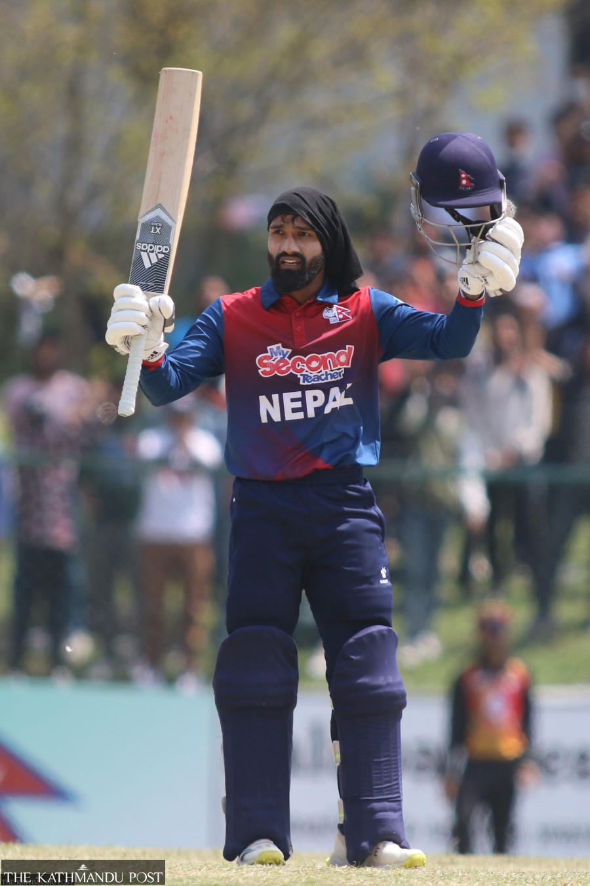

Dipendra Singh Airee
january 24,2000 B.S
Role:ALLRounder
SHORT BIOGRAPHY ABOUT HIM
He is a Nepali cricketer who plays as an all-rounder. He is famous for his accurate throwing good spin bowl
.He is a nepal cricketer in all rounder format and famous in the world for his throwing wicket and good bwoling in spiner and better bitting and hitting six.He is also play for npl suderpachism team as a captian.This team was go finally few month ago but lose the final from Lumbini riders.This team play very well cricket in npl and maybe this team will be win next year final match because of good performance in npl.
HOBBIES
His hobbies is playing cricket for the country and also enjoy travelling and enjoy with friends and family.Also enjoy with cricketer for some crickters birthdays.
FAVORITE SUBJECT
His favorite subject is Nepali because of he was studies in goverment school and also He talent in Nepali subject.He get more number in nepali subject and He speaks neapli frequentily and also birth in nepali place.
PROJECTS OR SKIILS PROJECTS OR SKIILS
He has diffrent types of skills like PLaying good s cricket and pass in +2 level AND good speaking in English laugause and he is also in team os world cup 2026 squard for is good playing and performance better in all rounder format for is good batting and bwoling and drive fielding.